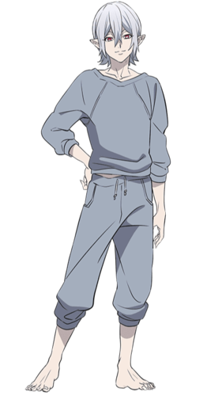

Mihai Florescu (ミハイ フロレスク, Mihai Furoresuku?) is a member of the Inugami Detective Agency and a vampire.
Mihai has the appearance of a young man, though his real age is unknown. He has silver hair that reaches above his shoulders. His eyes have a down-turned shaped and a bright red hue. He has sharp teeth and nails, alongside pointy ears.
Mihai's outfit consists of a mid length-sleeved gray sweatshirt with matching gray pants. He'll sometimes also be wearing his black, red, and silver over-the-ear gaming headphones around his neck.
Mihai is a callous and self-centered individual who considers the people around him to be toys for his amusement. He is willing to lie and manipulate others into perilous situations for his own entertainment. He does not seem to be able to understand how other people react to the result of his actions. Even Inugami considered Mihai to be potentially dangerous and volatile when he is in a bad mood. However, he is not actively malicious and is willing to offer assistance as long as he finds the situation interesting
Although he has a nonchalant and laidback attitude, Mihai has surprising diligence and dedication to whatever he has set out to do. Once he has agreed to work on something, he will deliver the best possible result, even to the detriment of his temporary enjoyment. For example, when he agreed to train Shiki in a video game, he went out of his way to prepare him food and bedding, among other in-game caretaking functions, either to ensure Shiki is in the best of health, or to not break immersion of his video game